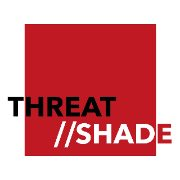

//Who's Casting a Shadow Over Irish Nature?
A league table of Ireland's worst polluters. Each one is scored from public records: EU carbon reporting, EPA enforcement lists and court convictions, wastewater failures, and how close the damage sits to protected rivers, estuaries and bays. Pick a polluter to open its file, or change the weightings and watch the table reorder.
Data last reviewed: loading…
//Damage Mapmarker size = score · click a county
Why Sitka spruce matters
Sitka spruce is a North American conifer and Ireland's most planted tree. Native woodland now covers only about 1% of the country. Plantations can still support wildlife, especially when young, mixed or well managed, but research points to these costs:
- Fewer native species. A study of 60 Irish forests found native woodlands were generally richer in species, and home to different ones, than plantations. In plantations, species numbers were lowest in the middle of the growing cycle, after the spruce canopy closed. FORESTBIO, UCC and Trinity College Dublin, 2011
- Rivers. Felling and replanting released sediment and phosphorus into streams, and forests planted on peat lost more acidity to water. EPA HYDROFOR study, Research Report 169, 2016
- Pearl mussels. Forestry is a significant pressure on 192 of the rivers at risk of failing water quality targets, mostly through fine sediment that smothers the critically endangered freshwater pearl mussel. EPA Catchments Unit
- Hen harriers. Planting conifers on open uplands removes the moorland these birds of prey need; young plantations help briefly, but become unusable once the canopy closes. Breeding pairs fell 8.7% between 2010 and 2015. Irish Times, 2018
- Lost oak woods. 90% of Ireland's protected habitats, woodland included, are in unfavourable condition, with forestry among the pressures. The National Parks and Wildlife Service estimates about 10,000 ha of old sessile oak woodland must be re-established. Irish Times, 2025 · Farmers Journal, 2025
//Polluter Fileevidence and sources
//Scoreboard
Tune the scoring: what matters most to you?
//HOW WE SCORE
Every polluter gets points in five categories, which add up to 100 at equal weights. Points come only from documented records listed in the sources. Moving a slider scales that category up or down, and the total is rescaled to 100 so scores stay comparable.
| Category | Max | How points are given |
|---|---|---|
| Climate | 30 | Reported tonnes of CO₂ on a log scale. 10,000 t scores 0 and Ireland's largest EU ETS emitter (12.3 Mt) scores 30, so a 1 Mt emitter gets about 19. Land-use polluters report no figure, so they get a labelled estimate (drained peat area × a published emission rate) or zero where no estimate is sound. |
| Water | 25 | 25 for systemic failures (daily raw sewage plus repeated convictions). 18 for being a current EPA priority site over water or groundwater. 12 to 15 for a court case over discharges to water. 10 for an earlier priority listing linked to water risk. |
| Air and odour | 10 | 10 for being a current EPA priority site over air or odour. 7 to 8 for a conviction or earlier listing over air or odour. |
| Enforcement | 20 | 10 for being on the current EPA priority list (5 for an earlier listing), 3 for each concluded prosecution up to 15, 2 for each regulator's stop order (up to 4), and 6 more for a fine or penalty of €100,000 or more. Capped at 20. |
| Habitat | 15 | How sensitive the receiving environment is. 15 for sites on or discharging into protected rivers and estuaries (such as the Lower River Shannon or the Blackwater), down to 4 where the damage is spread out, as with aviation. Large owners of drained peatland score 12 to 15. This is the one judgement-based category. |
Threat levels: Critical 50+, High 35 to 49, Elevated 22 to 34, Watch under 22. Carbon figures are 2025 EU ETS data where published, otherwise the latest available year (marked).
//HOW YOU CAN HELP
The scores show where the damage is. These groups are repairing it, and most of them need volunteers. No experience is needed for a planting day.
Plant, restore and protect
- Gaelic Woodland ProjectAn all-volunteer charity. Its "Meitheal Days" plant new native woodland and clear invasive cherry laurel from existing woods.
- ReWild WicklowA community group restoring native habitats across Wicklow, from tree planting to peatland restoration.
- HometreeA Clare charity growing native forest. Monthly volunteer days: planting in winter, nursery and seed-saving work in summer.
- Native Woodland TrustProtects and expands Ireland's remaining ancient and semi-natural woodlands, with volunteers nationwide.
- Irish Peatland Conservation CouncilRuns bog nature reserves and restores peatland habitats.
- Irish Wildlife TrustLocal branches around the country run walks, surveys and conservation work.
Report and record
- Report pollution to the EPAUse the EPA's "See it? Say it!" app to send a photo and location of dumping, burning, odours or water pollution to your local council.
- Inland Fisheries Ireland: 0818 34 74 24Report water pollution, fish kills, illegal fishing or damage to rivers and lakes.
- Record wildlife sightingsSend what you see to the National Biodiversity Data Centre. Records help show where wildlife is doing well and where it is in trouble.
- Tell us what we're missingKnow of a polluter, a court case or a group we should list? Email info@threatshade.com.
Threatshade is not affiliated with these groups and they have not endorsed this site. We list them because their work restores what the polluters on this page damage. Run a group that should be here? Let us know.
//SOURCES
//WHO WE ARE
Threatshade is an independent, volunteer-run group. Find us on GitHub: